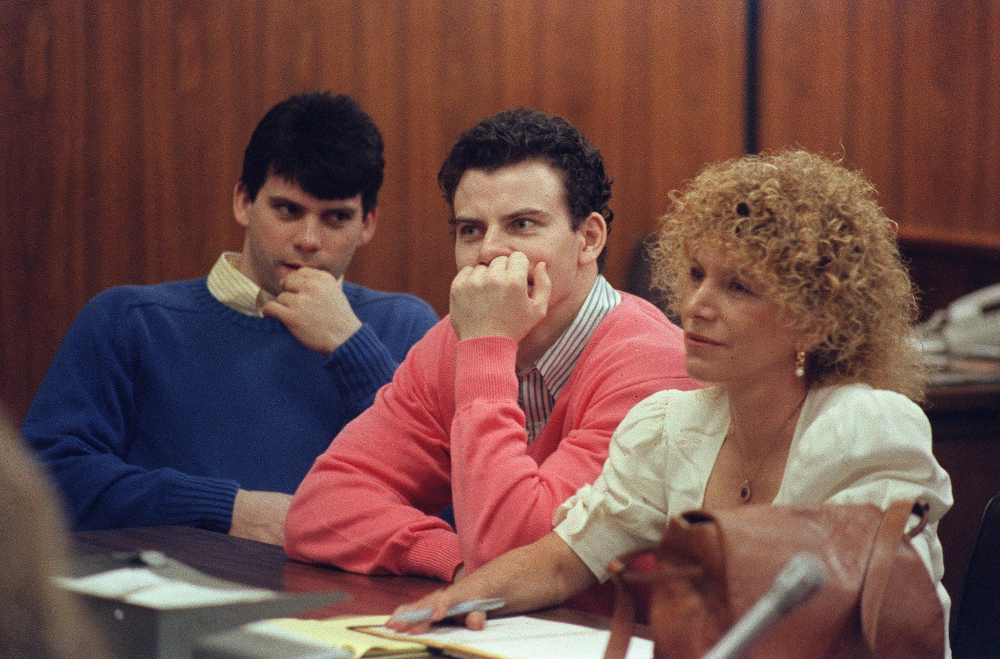

A relação entre Erik e Lyle Menendez e sua advogada, Leslie Abramson, é um dos aspectos mais intrigantes e controversos do caso. Abramson, conhecida por sua defesa agressiva e carismática, rapidamente se tornou uma figura central no julgamento dos irmãos. A dinâmica entre os três era complexa e marcada por lealdade, dependência e, em alguns casos, conflitos de interesse. A advogada, que adotou uma estratégia de defesa baseada nas alegações de abuso dos irmãos, criou um vínculo estreito com Erik e Lyle, tornando-se uma figura materna para ambos. No entanto, a intensidade dessa relação e as táticas utilizadas por Abramson durante o julgamento geraram debates acalorados sobre ética profissional e a busca pela verdade. A relação entre os Menendez e Abramson continua a ser objeto de fascínio e análise, levantando questões sobre o papel dos advogados, a natureza da justiça e a complexidade dos relacionamentos humanos.
